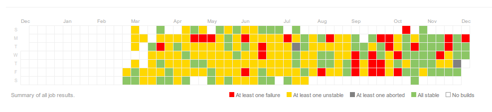

Changelog Analysis Dashboard
Changelog Analysis Dashboard
Github
All information is public available at Github: AnalysisDashboard repository. This includes all code and code changes.
v2.0
Features
- Icon has been changed
Bug fixes
- MethodName can be larger, otherwise some test results could not be captured
- User icon url is now centralized
v0.5
Features
- Overview of a the history of a testcase can be opened in a separate tab/window instead of only a popup. This is available from 2 places:
- From the list of random failures, right-click on the and open it in a new tab/window
- In the dashboard view at a failures: rright-click on the and open it in a new tab/window
- The history of a testcase contains the error message and stacktrace of previous failures as well.
In the history overview of testcase you can see the error details of earlier failures as well. That is showed in the right side of the list.
There is the error message and the error stacktrace. Also in this overview there is the integration with Eclipse to send the stacktrace to Eclipse.
v0.4
Features
- Overview of a job can be opened in a separate window instead of only a popup. This is available from 2 places:
- From the list of jobs, there is a new column with the links to open the job details
- In the dashboard view: right click on the 'edit details' and open in a new tab or new window
- Stability overview of a job:

With this chart you can have a feeling about stability of a job.
When you hover a box you will get the info about that day: date and number of failed builds, number of unstable builds, number of aborted build and number of stable builds. As soon as there is non-stable run, it will turn into that color although there might be more successful runs as well.
Bug fixes
- Ordering of the Random Failures list was not correct
v0.3
Features
- List of random failures. In the toolbar a new entry is available: 'Random failures'
This list gives an overview of all test failures which are marked as 'random'. Each testcase is only listed once, with the date of the last occurrence. With the option mentioned at the bullot below you can see the list of all failures for this testcase. - For each test you can view a list of all failures, including random failures. It is accessible when you click on this icon:
Bug fixes
- -
Older
Not all changes are recorder per version number. Complete documentation of the AnalysisDashboard can be found here.